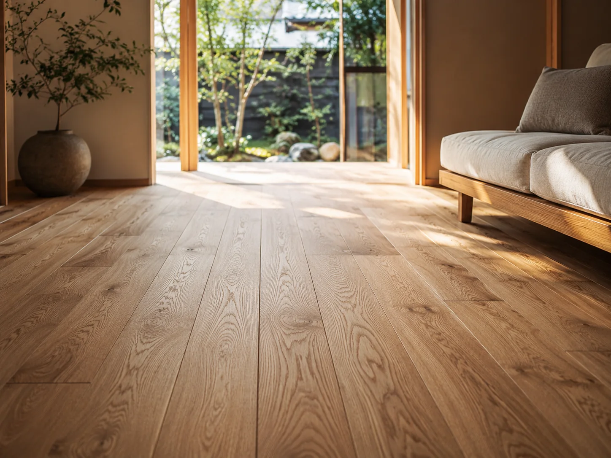
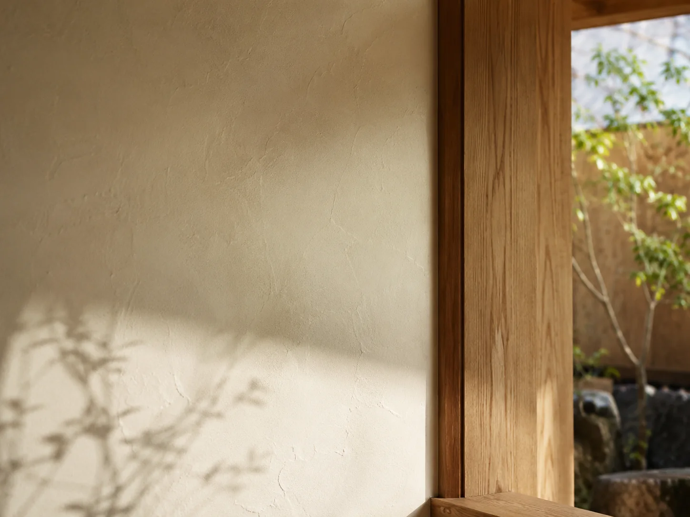
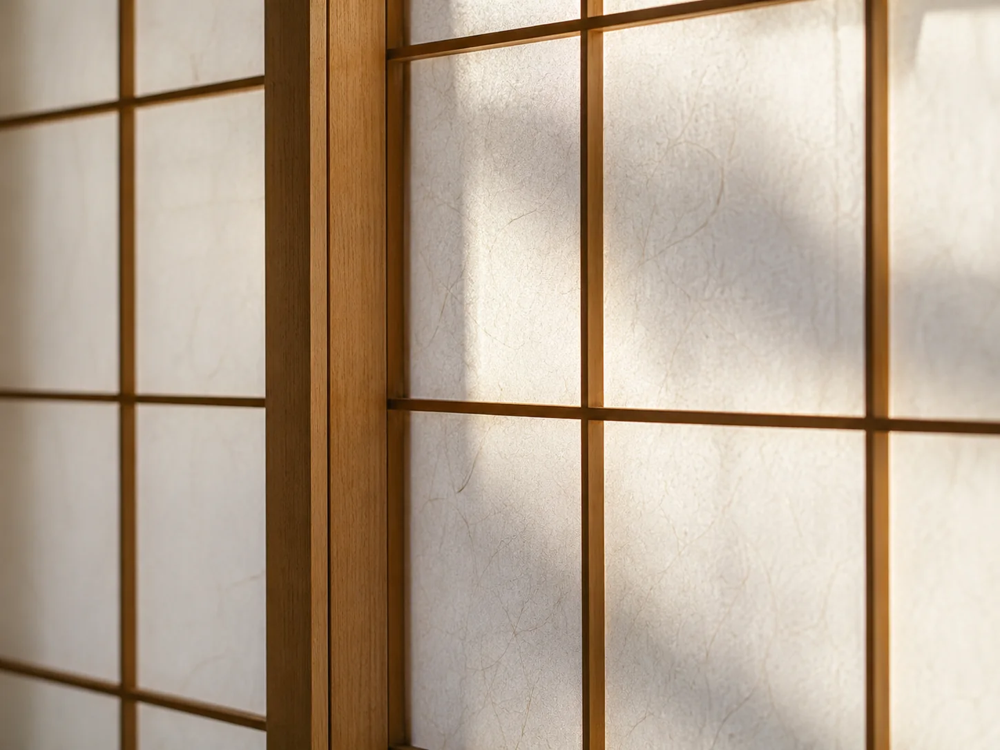
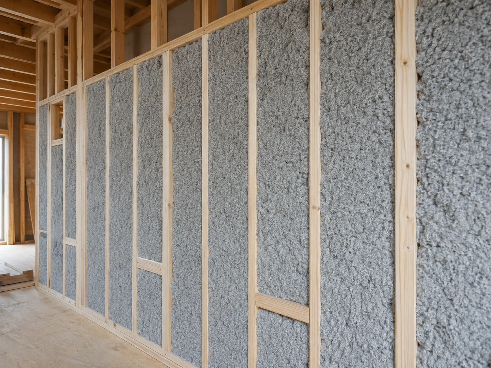
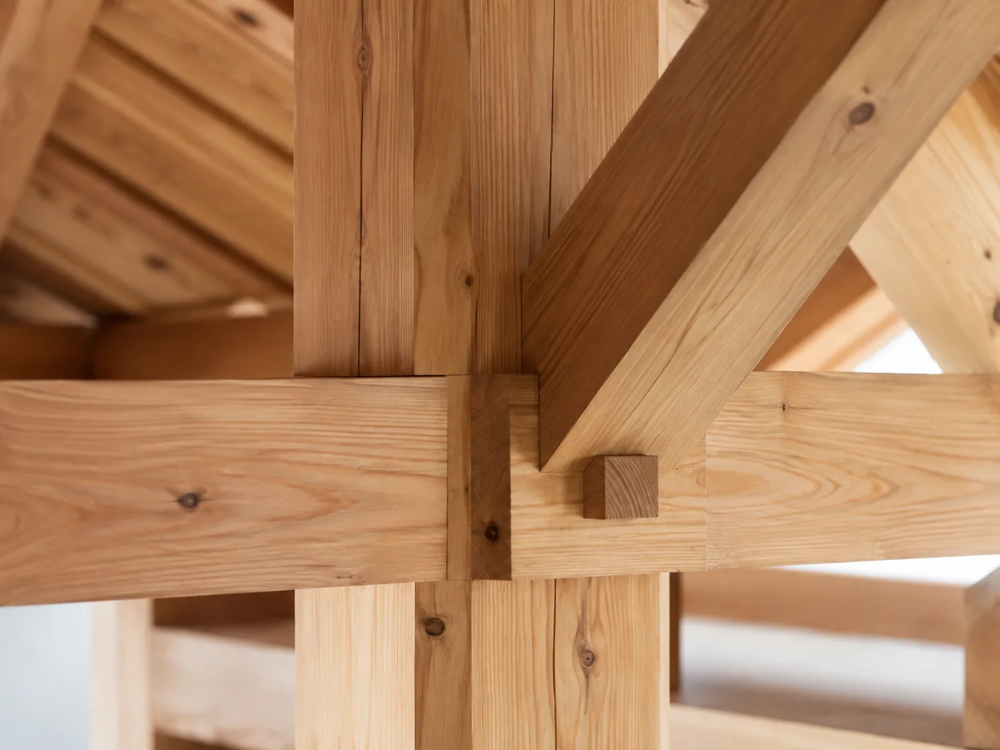
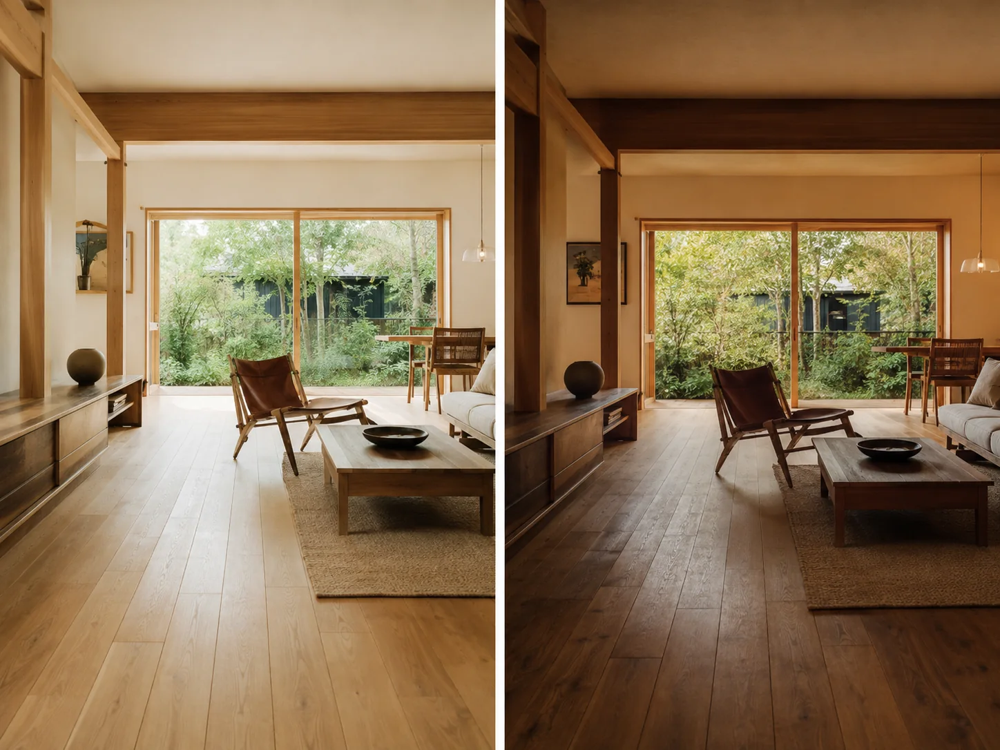
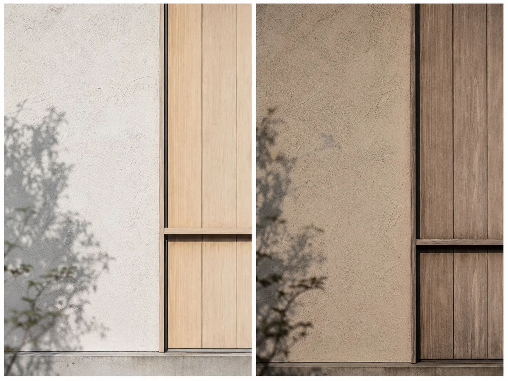
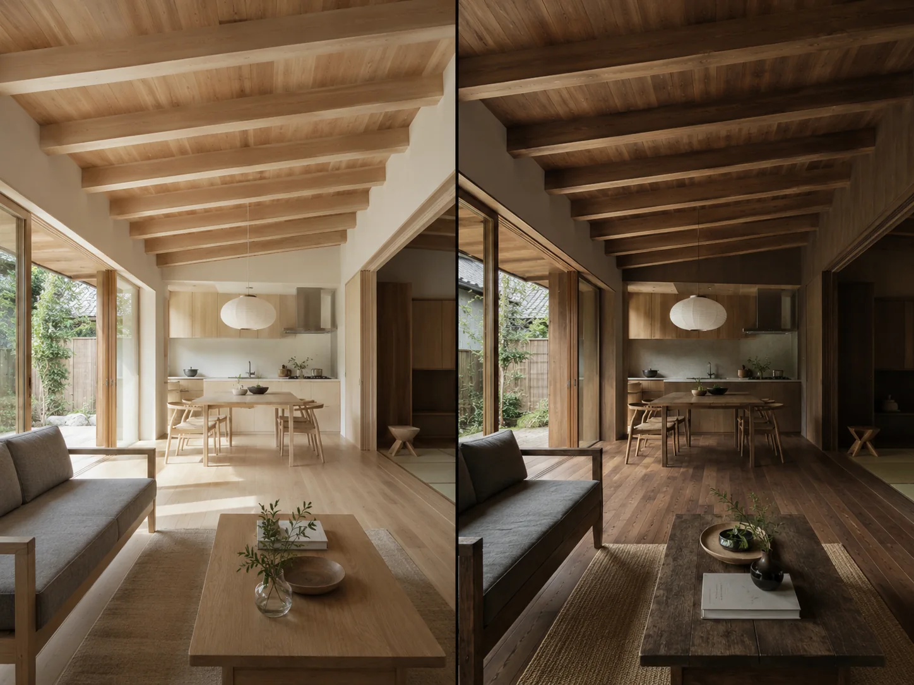

無垢床
素足で触れたときのやわらかさ、木目の表情、時とともに深まる色合い。無垢床は、暮らしの中心で日々の時間を受け止め、住まいに自然な温もりを与えてくれます。

MATERIALS
MATERIALS
KURAHAUSでは、見た目の美しさだけでなく、
肌ざわり、空気感、香り、経年変化まで含めて素材を選んでいます。
無垢材や漆喰、和紙、断熱材、構造材。目に見える部分も、
見えなくなる部分も、心地よい住まいの土台になるものを大切にしています。
素足で触れたときのやわらかさ、木目の表情、時とともに深まる色合い。無垢床は、暮らしの中心で日々の時間を受け止め、住まいに自然な温もりを与えてくれます。

やわらかな陰影をつくる漆喰壁は、空間に落ち着きと静けさをもたらします。自然素材ならではの表情があり、木との相性もよく、KURAHAUSらしい穏やかな空気感を支えます。

和紙は光をやさしく受け止め、室内にやわらかな明るさを届けます。障子や建具に使うことで、自然と調和した落ち着いた空間をつくります。

見えなくなる部分にも、心地よさを支える大切な素材があります。セルロースファイバーは、断熱・調湿・吸音に配慮した断熱材として、快適な住まいづくりを下支えします。

住まいを支える構造材には、確かな品質と美しい木組みが求められます。地域の気候風土に合った木を活かし、見えない部分にも誠実な家づくりを行います。
AGING
自然素材は、時間とともに色や質感を深め、暮らしに静かな豊かさを重ねていきます。

日々の光や暮らしを受けながら、木の色味は少しずつ深まり、住まいに落ち着いた表情を与えます。

漆喰はやわらかな表情を保ち、木部はより深い色合いへ。新築時の美しさに加え、時間の積み重なりが魅力になります。

新しい家の明るさも、時間を経た住まいの落ち着きも、どちらも自然素材ならではの魅力です。

素材や性能、設計のことを
まとめた資料をご用意しています。